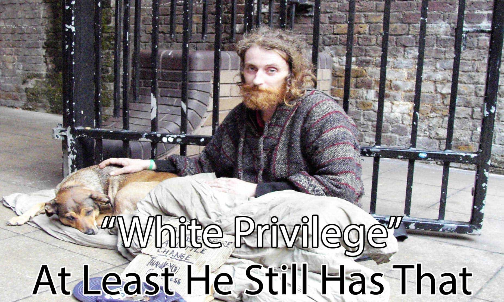

< < < Back
3 Reasons I Will Never Apologize For Being White – Return Of Kings
“White people are terrible,” “I have white privilege,” and “most of the world’s problems are caused by white people” are three general statements countless social justice warriors and their enablers agree with. Yet they are all based on the severest distortion of reality. You or I should no more apologize for being white than an African-American should for being black.
Just as many blacks, Hispanics, and other minorities are made more pliable by the media and the establishment by being told they are eternal victims, white people are made more pliable by agreeing that they need to always feel guilty. Using an SJW “anti-racism” that feels awfully like the leftist version of a Nazi book about hereditary, white people supposedly inherit the evil deeds of dead dudes who owned slaves prior to the Civil War or arrived on a foreign continent in a year like 1492 or 1788.
The establishment-enforced guilt is even greater for those directly descended from such people, but even culturally and genetically unrelated individuals like Polish- and Italian-Americans, whose ancestors pretty much all arrived after periods like the slavery era, are held accountable, too. Why? Even if we ridiculously assumed we can find descendants “guilty” of their ancestry, the white guilt thesis is like putting all of Harlem’s young black men in 2016 under house arrest because 20 of them were involved in a vicious street brawl… in 1937.
Provided you adhere to our creed, neomasculinity and the Return Of Kings community form the broadest functional church you will find. We do not care where you come from, so long as you support our goal of a return to masculine societies that emphasize community-building and do not apologize for taking pride in their own cultures. ROK readers who are black, white, Asian or something else are all equal in this regard.
Here are just three of many reasons why I will not hate or feel guilty about my skin tone.
1. I’m the descendant of victims myself because many of my ancestors were from oppressed ethnic and religious groups
Look at those privileged starving Irish!
Are you heavily Irish-blooded, like me? Italian? Polish? Ukrainian? Were your ancestors Catholics living in heavily Protestant areas, or perhaps Huguenots who had to flee persecutory France?
It’s funny how SJWs prance on about white privilege when over half of all whites who emigrated to America, Canada or Australia, from the Puritans to Yugoslavian Civil War refugees, came because the civilian government or monarchy representing another ethnicity or religion essentially chased them out, had killed their family members, or wanted them dead, too. Many of the white groups who did take the journey, particularly the Italians or Irish, were then subjected to quotas and mistreatment in places like New York for years.
A great deal of my ancestors were Catholics in Prussia and other Protestant parts of northern Germany. This section of my family tree is replete with persecutions, including one great-great-great-great grandfather who lost sight in one eye and movement in his arm after being brutally assaulted by a Prussian policeman. His crime? Being an ethnic German leaving a Catholic church on Sunday in the 1800s. Catholic churches were only for “subhuman” Poles. Catholic Prussians were seen as traitors who belonged in Bavaria, prison, or dead. He ended up eking out an existence as a tailor with one good arm, after both he and his brother were repeatedly refused admission to the civil service for their faith.
In addition, I had Irish immigrant forebears whose fathers, mothers, brothers, and sisters died as a result of the Potato Famine. One of these ancestors, the eldest child in his family, was working in Dublin to make money for the family when, in the space of three months, he received news that his parents, all his sisters, and all but one of his brothers had died from starvation, malnutrition, or diseases related to them.
When my aunt did the genealogy over three years, she counted 37 family members in one corner of an Irish county who died from starvation or starvation-related illness in 13 months. The famine was predicted and even aggravated by the British. Considering the squalor into which the occupiers had driven the Irish Catholics, the whole ordeal was fundamentally caused by them, too. With only an extra mouth to feed, this great-great-great grandfather of mine took his barely school-aged brother with him to Australia two months later. What role did these two have in oppressing others, white or non-white, that I should feel shame about today?
Look further back into my family tree and you find German, Dutch and Swiss Jews, many of whom were shunted around various locations within Europe, depending on what limited patience local authorities had for yarmulke-wearers at the time.
With this lineage, what exactly do I have to apologize for, aside from my supposedly very, very privileged, at best lower middle-class English forebears from drab West London and grim Yorkshire? Most of them never saw a dark person, let alone mistreated one. To boot, the vast majority lived poor, thankless lives without clean sanitation, abundant food, or anything close to job security. And these are the stations in life, through no fault of their own, that 95% of your ancestors reached as well.
2. Minorities and other non-whites frequently treated and still treat each other far worse than white people did
Rwandan genocide, anyone?
From the pre-Columbian Central and South American peoples to the Rwandan genocide, non-whites have very often treated one another even more abysmally than whites have treated them. European technology may have amplified the number of indigenous and other deaths in places like the Americas, but raw hatred, aggression, and the continuity of violence can be found in even greater quantities in non-white historical squabbles.
Europeans have also been incorrectly blamed for things like infectious diseases, despite the scientific work of antiseptic procedure pioneer Ignaz Semmelweiss being years, sometimes even centuries away. Meanwhile, non-whites have been allowed to kill non-whites without serious condemnation from SJWs.
For example, critics of the Iraq War and the attempted rebuilding of post-Saddam Iraq have said that the whole country is based on a fiction that dates back to the European post-World War I mandate systems. In other words, if Kurds, Shia Arabs, and Sunni Arabs inhabit the same country, they kill each other! Whilst it is appetizing for SJWs to blame the big, bad British and French for this, it is far from the truth. Kurds and Arabs have been butchering each other for countless centuries. The greatest Muslim figure of all the Crusades, Saladin, was consistently mistrusted because of his Kurdish origins. Similarly, intra-Arab or Arab-Iranian Sunni-Shia violence is age-old and has little if anything to do with Europeans.
Last year, Rock Thompson wrote a superb piece about the hypocrisy of attacking Columbus Day in the Americas. His work exposed the double standards of many Native American and also Central and South American tribes, who pretend their ancestors were routinely peaceful when, in fact, they regularly engaged in deplorable acts of gratuitous violence, including human sacrifices and the sadistic mutilation of enemies who were not so ethnically different. The conquistadors and Puritans are falsely seen as the harbingers of cultural and racial genocide in the Americas. Local indigenous tribes, however, were already hunting each other down for sport well before the tall ships arrived.
3. White-majority countries make the humanitarian world go round
A tent city the Saudis refused to make available for fellow Arab Syrian refugees.
Whenever you find an aid program for starving Africans, war-torn Arabs, or other suffering people, chances are that a number of white Westerners are behind it. Even if they’re not all white, they invariably come from white-majority and/or white-founded Western countries, or are funded by them. All to assuage the guilt of white people living in 2016 who feel the need to apologize for a European colonial regime that replaced almost always far more brutal indigenous ones.
Western countries also welcome non-whites in droves, both as immigrants and as “refugees.” The recent Syrian crisis is a testament to this (over-)generosity. While Saudi Arabia refused to accommodate fellow Arab Syrians in their already-constructed tent city, used normally for the Haj Priligrimage, Germany and other European states bore the brunt of those fleeing, including through the open door policies of leaders like Angela Merkel.
In general terms, white people care more about the developmental outcomes of non-whites. Wealthy non-white countries like Japan and Korea have perfected a system of meticulously keeping their populations pure and rejecting the asylum claims of over 99% of claimed refugees. This asymmetrical state of affairs is ironic when Japan’s own history of colonisation, notably the Rape of Nanking, is taken into consideration.
White guilt is also very profitable for certain establishment figures and zealous entertainers. It’s why twats like Bono and Bob Geldof get up every morning, after all. And, far from sucking the world dry, white folks have repeatedly tried to make it better. Very often this generosity is taken to an extreme, but the point of white-majority countries acting and non-white countries stalling or ignoring remains valid.
Be proud of who you are

Give up on the self-hatred. Too many people already have it without resorting to race. Whatever your skin tone or creed, stand tall. For white people, sadly, we need to say this to ourselves even more because society has shoved it down our throats that we should feel eternal shame. So many instances are used by SJWs and others to try and force us to collectively apologize for historical events. These events are often so old that only people who died decades or centuries ago actually lived through them.
You are only responsible for yourself, no matter how bad faceless leftists want you to feel about your skin tone.
Read More: Groveling Confession Of Asheville Coffee Shop PUAs Shows Why You Should Never Apologize To SJWs